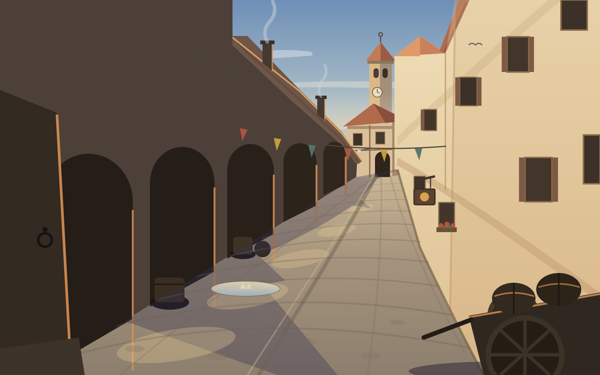
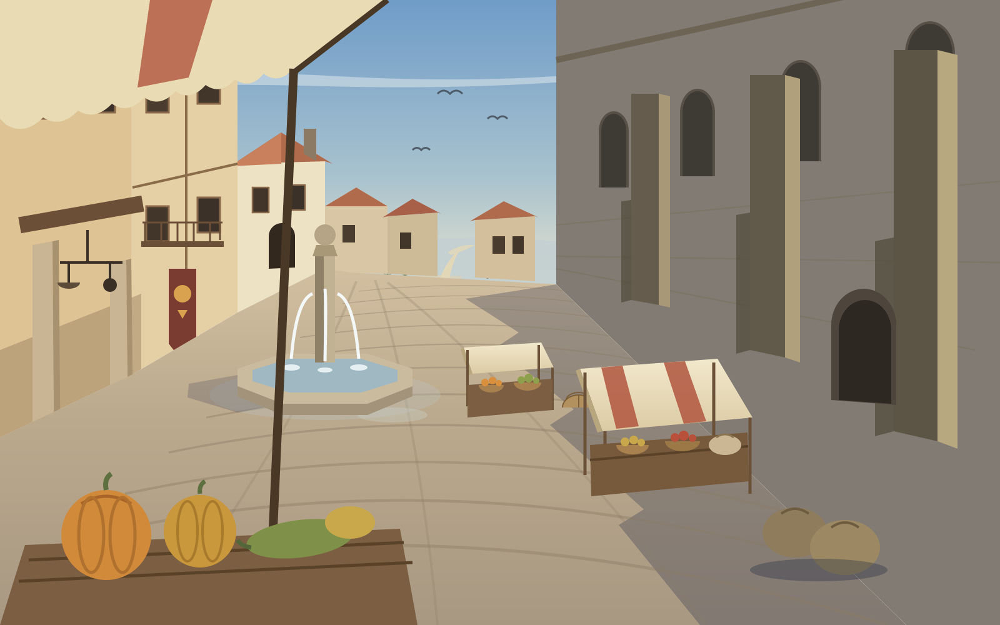
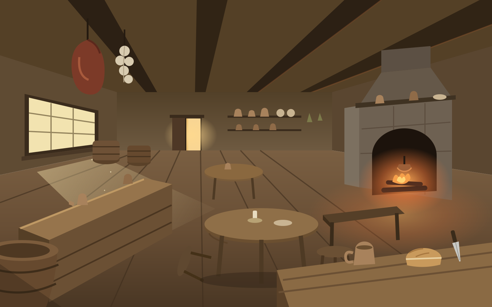
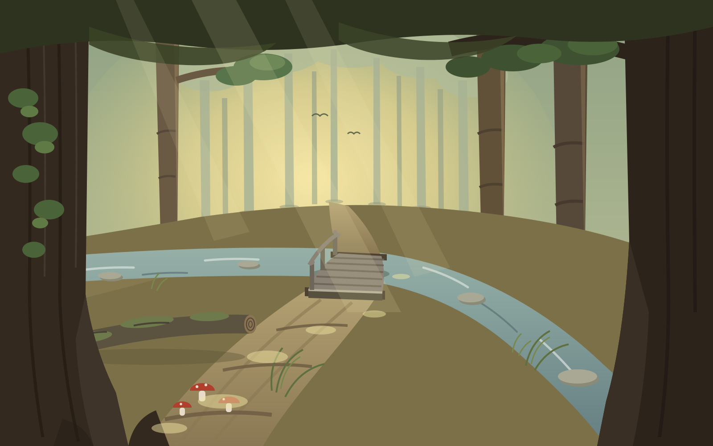
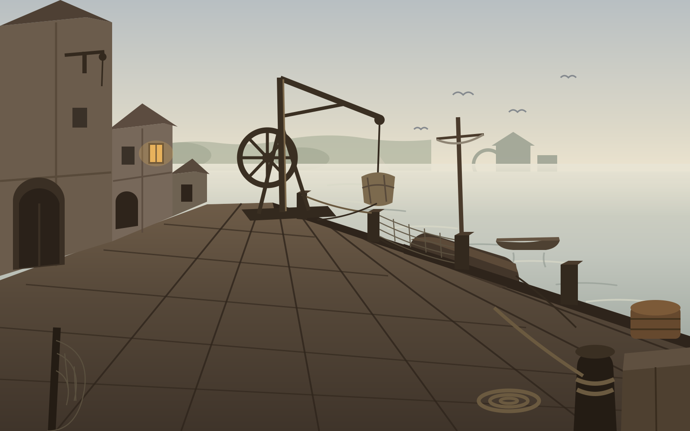
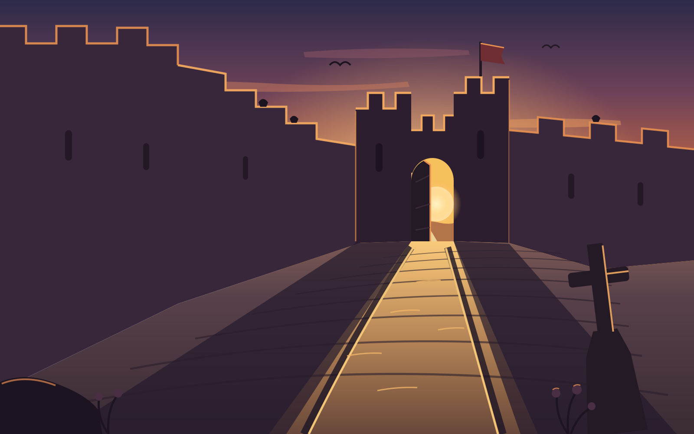

escenografia_lab — pares descripción ↔ escenario SVG
Bases hechas a mano con estética de plató de cine de los años 50
(decorado a nivel de suelo + fondo matte, cero teatro). Cámara al sur mirando
al norte, un punto de fuga, focal larga. Cada par: descripcion.md
(el texto genera el escenario) + escena.svg. Selecciona los que
funcionen y anota cambios; los elegidos serán referencia de estilo para el
modelo de imagen y norte del compositor v4.
01 · Calle mayor curva — atardecer

Foco: torre sobre el codo de la curva. Luz: sol bajo del oeste —
soportales a contraluz, fachadas doradas, sombra corriendo A LO LARGO de la
calle con charcos de luz por los arcos. Primer término: pilar del soportal y
carro con barricas. descripción
02 · Plaza del mercado — media mañana

Foco: la fuente al sol contra la sombra diagonal de la iglesia
(sillería con contrafuertes). Toldos, puestos, vega pálida entre tejados.
Primer término: toldo festoneado invadiendo arriba + mesa de calabazas.
descripción
03 · Sala de la posada — media tarde

Foco: la boca de la chimenea (volumen de piedra que sale del
muro). Luz: lámina dorada de la ventana oeste con motas de polvo + resplandor
del fuego. Vigas bajas con jamón y ajos en primer término alto; barra en fuga,
banqueta volcada. descripción
04 · Senda del arroyo con puente — primera tarde

Foco: el claro dorado del fondo tras la cortina de troncos
pálidos. El arroyo cruza la escena y la senda lo salva por el puente combado.
God rays y motas de sol; haya enorme con hiedra y setas de primer término.
descripción
05 · Muelle de la Barca — amanecer con niebla

Foco: la grúa de rueda con el fardo a medio izar, en silueta
contra el agua peltre. El canto del muelle corta en gran diagonal; gabarra
amarrada tras el cantil, redes secándose, candil del fielato como único punto
cálido. descripción
06 · Puerta del Poniente — sol poniéndose

Contraluz total: el arco enmarca el sol y vierte un pasillo de
luz cuesta abajo por las roderas; muralla y crucero en silueta con filo
naranja; grajos en las almenas.
descripción
Navegar: cd escenografia_lab && python3 -m http.server 8912
o abrir este archivo con file://. Ver README.md para el checklist de
composición que cumple cada escena.